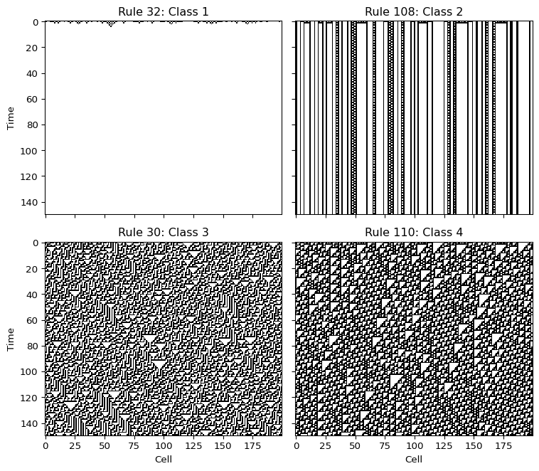
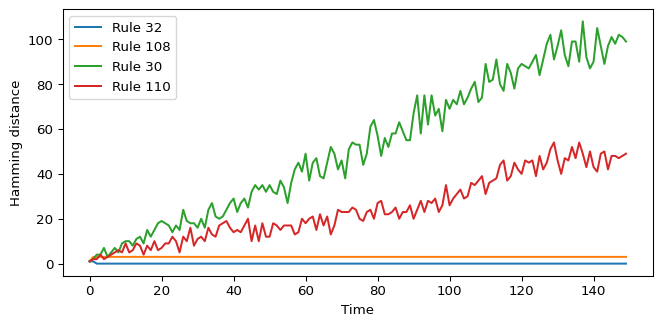
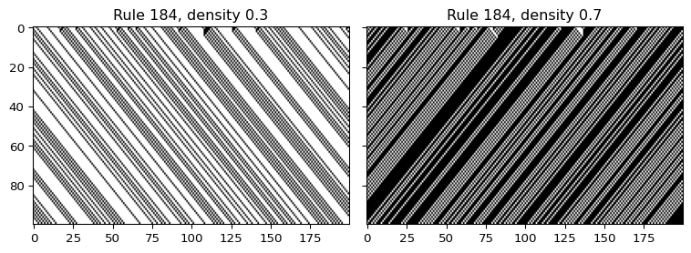

Wolfram Classes
Module 6: Explorables and Discrete Models
Wolfram studied the long-run behaviour of one-dimensional cellular automata started from random initial rows. He proposed that almost all rules fall into four qualitative classes (wolfram1984universality?).
The four classes
- Class 1. Evolution leads to a homogeneous state, for example all cells 0.
- Class 2. Evolution leads to a set of separated simple structures that are stable or periodic.
- Class 3. Evolution leads to an aperiodic, chaotic pattern.
- Class 4. Evolution leads to complex localized structures, sometimes long-lived.
Wolfram related the first three classes to limit points, limit cycles and chaotic attractors of continuous dynamical systems, and conjectured that class 4 rules can support universal computation (wolfram1984universality?).
How to read the diagrams
- In rule 32 every cell is 0 after a few steps.
- In rule 108 isolated stripes remain fixed or blink with a short period. A change in the initial row only affects nearby stripes.
- In rule 30 the pattern looks random, and a single-cell change in the initial row spreads through a growing region.
- In rule 110 moving localized structures travel over a periodic background and collide.
Sensitivity to a single flip
A quantitative way to separate class 2 from class 3 is to flip one cell of the initial row and track the Hamming distance, the number of cells in which the two runs differ.

For rule 30 the distance grows roughly linearly, because the perturbed region spreads at a finite speed of at most one cell per step on each side.
Limits of the classification
The classes are defined by visual inspection of typical runs, not by a formal test. Some rules show different behaviour for different initial conditions, and later work proposed measures such as Langton’s \(\lambda\) to organize the rule space (langton1990computation?). Treat the classes as a first vocabulary, not as a theorem.
Exercise
Run rule 184 from a random row with density \(0.3\) and with density \(0.7\). Which class would you assign? Does your answer depend on the density?
Solution
fig, axes = plt.subplots(1, 2, figsize=(8, 3), sharey=True)
for ax, rho in zip(axes, (0.3, 0.7)):
ax.imshow(simulate_eca(random_row(200, rho, seed=1), 184, 100), cmap="binary", aspect="auto")
ax.set_title(f"Rule 184, density {rho}")
plt.tight_layout()
plt.show()
Rule 184 conserves the number of 1s. At density \(0.3\) all particles end up moving freely to the right; at \(0.7\) the holes move freely to the left. Both look like class 2 after a short transient, so the answer does not depend on the density here. You will meet rule 184 again as the simplest traffic model.